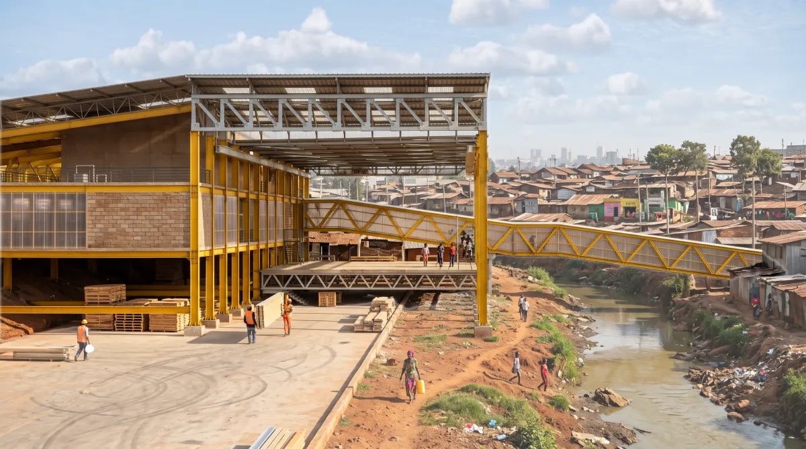
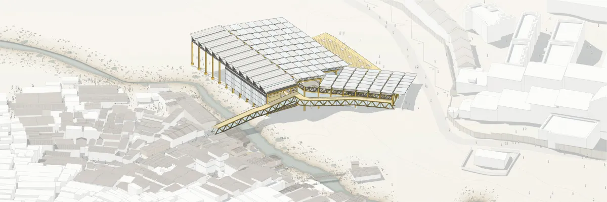
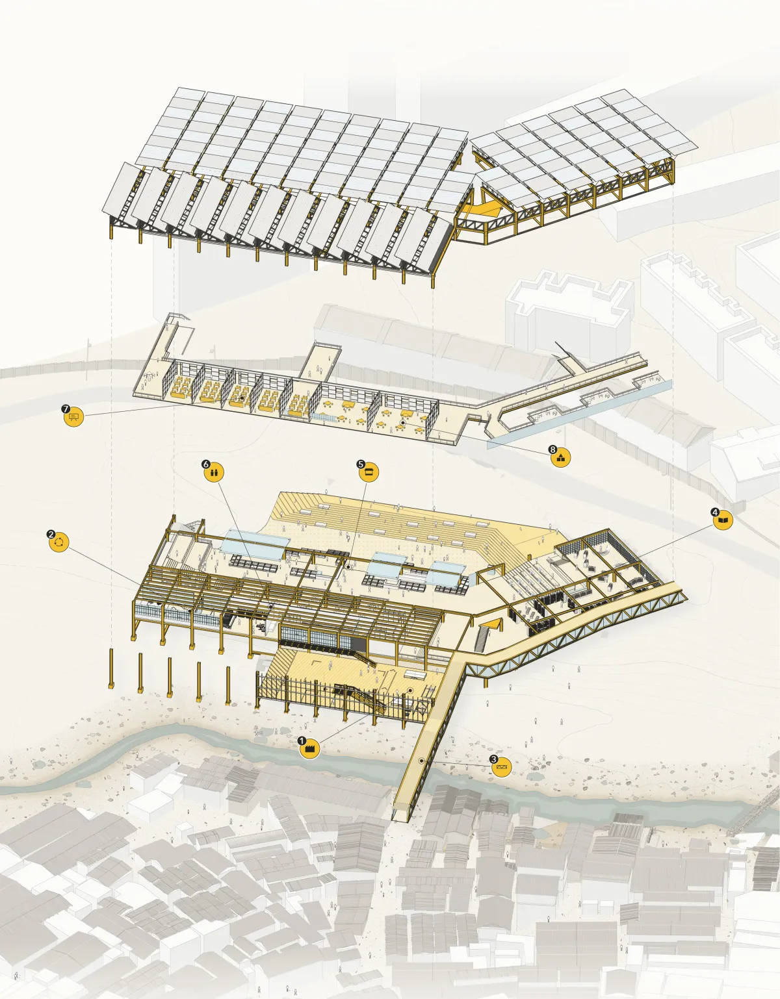
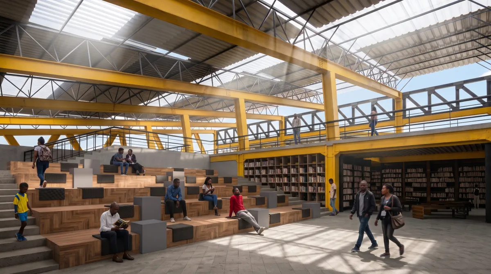
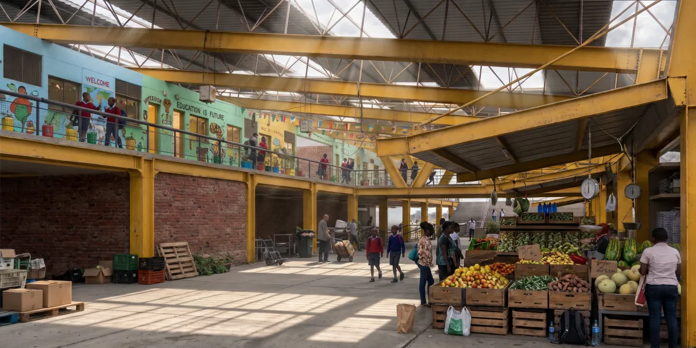
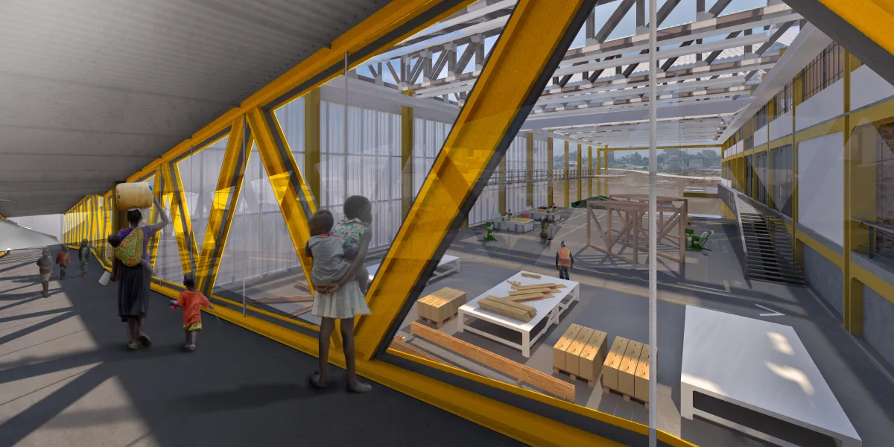
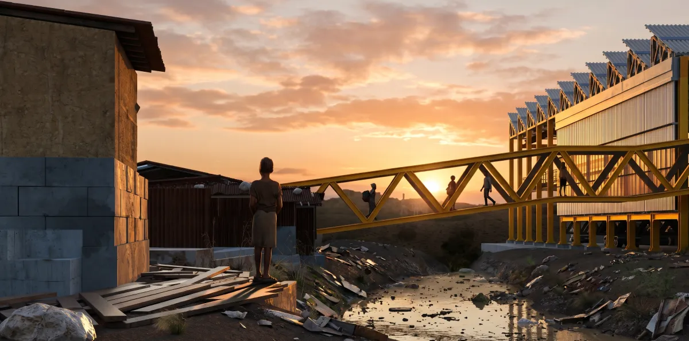
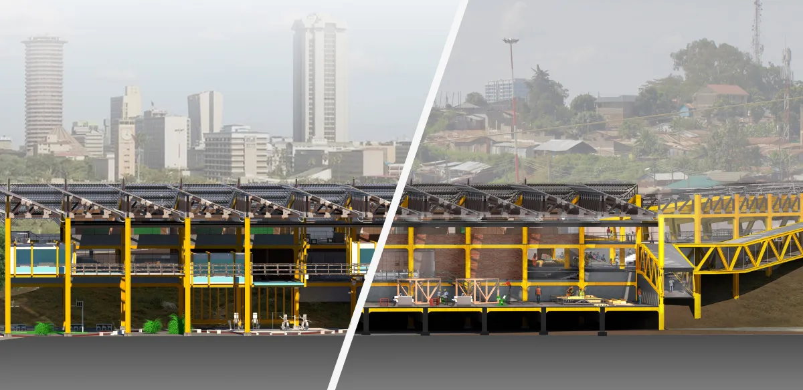

KIT
키베라 슬럼 주거 키트 공장과 브릿지
Slum Renovation with Housing Kit Factory and Bridge

키베라 슬럼 경계에 주민을 고용하는 주거 키트 공장을 세우고, 다리로 슬럼과 도시를 잇는다.
키베라는 나이로비 도심 한가운데 있는 아프리카 최대의 도시 슬럼으로, 2.38㎢에 25만 명 이상이 산다. 주거·범죄·위생·일자리 문제가 서로 얽혀 서로를 악화시킨다. 주거 문제를 먼저 풀면 범죄와 위생 문제도 함께 풀린다고 보았다.
슬럼에 공급할 주거 키트를 만드는 공장을 슬럼과 도시의 경계, 강을 따라 놓았다. 공장은 슬럼 주민을 고용하고, 공장과 재활용 시설 위로 다리·도서관·시장·학교 같은 공공 프로그램이 함께 놓인다. 슬럼 재생이 끝나 키트가 필요 없어지면 공장은 도시의 공공 건물로 남는다.
Site

Main Areas



Bridge


After Slum
